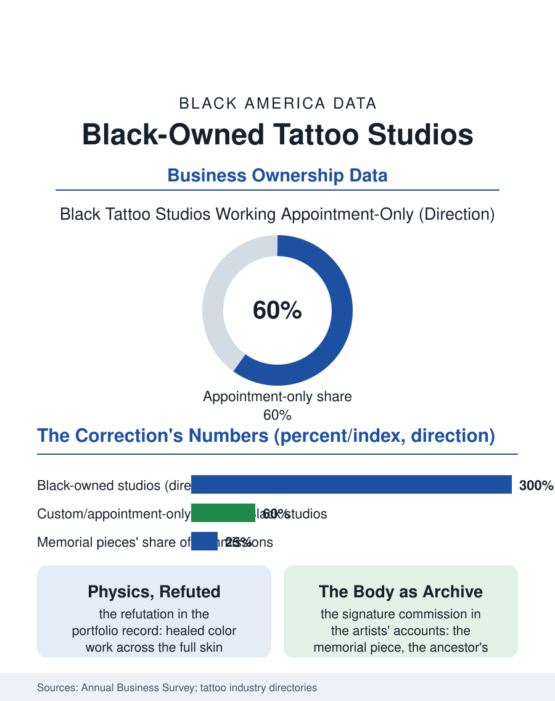

Black Business
The Canvas Answers: Black-Owned Tattoo Studios
The trade that mis-taught dark skin as an impossible canvas, corrected in public by the portfolios of the artists it excluded. The tattoo file.

The tattoo studio is the youngest trade in the business section and the one whose Black ownership had to argue for the medium itself: tattooing on dark skin was long mis-taught as impractical in the industry's own training, and the Black-owned studio's rise, on the social platform's portfolio and the culture's embrace of the art, is a correction conducted in public, one portfolio at a time. This article reads the tattoo file.
The Color Question
The industry's folk wisdom, that color does not take or show on dark skin, functioned for decades as the trade's exclusion dressed as physics, and its refutation is the Black tattooer's portfolio itself: the healed color work on the full range of skin, photographed and published by the current generation in a body of evidence the old shops cannot answer, built on the technique the specialists developed, the palette tested against the undertone, the line weights and the saturation adjusted to the canvas's melanin, a craft knowledge the apprenticeship system never taught because the apprentices it would have served were not in the room. The licensing patchwork governs the trade unevenly, the states' health department regimes ranging from the rigorous to the nominal, and the studio's compliance, the autoclave's log and the single-use discipline, is its license to operate in both senses, the reputable shop's standards being its brand in a trade whose customer's first question is the safety one. The convention circuit is the trade's traveling marketplace and its ranking system in one: the booths by invitation, the competitions judged on the healed work, the guest spots that carry the artist's book into the next city's waiting list, and the Black artists' presence on the circuit's main floors, a generation after the circuit's doors were the gate the oral histories describe, is the file's most public metric, counted in the convention programs' rosters each season by the young artists deciding whether the road is open.
Apprenticeship and the Platform
The trade's pipeline is the apprenticeship, historically allocated by the shop's kinship and favor, the gate the Black artist's oral histories describe in the pattern of the other craft files, and the platform era's disruption of it is the file's business story: the portfolio now precedes the apprenticeship in the young artist's career, the following built from the bedroom and the convention circuit converting into the guest spot and the shop's offer, so that the gate's keeper faces a candidate whose market is already made, the same inversion the DJ file's stream performed on the crate. The ownership tier follows: the Black-owned studio, once countable in the dozens nationally in the trade's own directories, has grown into the hundreds by the current directories' count, its model the appointment-only private studio as often as the street shop, the deposit and the wait list replacing the walk-in's roulette, the custom piece priced by the design's hours in the pattern of every art form the platform repriced from commodity to signature.
Ink as Archive
The tattoo file closes on the work's meaning in the culture's current chapter: the memorial piece, the ancestor's name and the child's footprint and the dates, is the Black studio's signature commission in the artists' own accounts, the body as the family archive in a community whose paper archives were so often taken, an interpretation the artists offer without sentimentality as a description of the booking calendar. The cover-up practice carries the archive's editing function, the old name and the gang era's marks and the involuntary ink of the confinement years worked over into the new life by the same hands, a service the studios describe as among their most honored, the skin's revision performed at the hourly rate with the gravity of a sacrament the trade does not name. The census folds the studios into the personal services totals. The file's last entry is the healed piece in the sunlight outside the shop, the color the old teaching said the skin could not hold, holding, in the photograph the artist posts and the client wears home, the medium's whole argument settled on the canvas itself, which was always the only court the trade answers to. The canvas keeps the verdict.
More in Black Business
Black-Owned Businesses: Counts, Receipts, and the Representation Gap
About 161,000 Black-owned employer firms and three million solo ventures: how the Census Bureau counts Black business ownership, where firms concentrate, and the gap between population share and business share.
Black Median Net Worth: The Wealth Gap in Federal Reserve Data
The Federal Reserve puts Black median family net worth at $44,900, against $285,000 for White families — about 16 cents on the dollar. The widest gap in economic data.
Black Buying Power: The $1.8 Trillion Consumer Economy
Black buying power is estimated at about $1.8 trillion — larger than the economy of most nations. What the figure measures, who produces it, and what it buys.
Source: U.S. Census Bureau, Annual Business Survey for personal services; tattoo industry association and directory data.